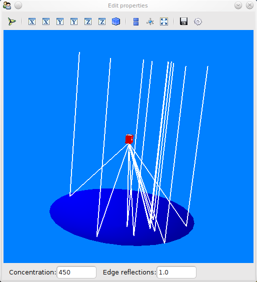
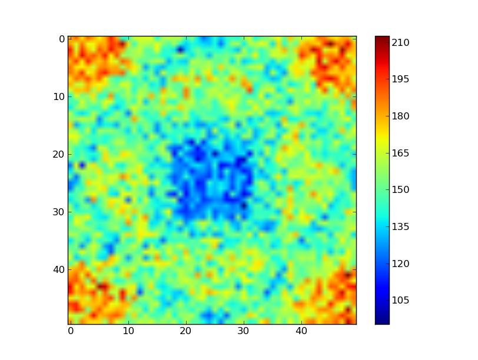

Below are screenshots taken from example code using Tracer. The example code is in the examples/ directory of the source distribution.
The following snapshot is from examples/tower_gui.py. It shows a
solar tower (also known as "power tower") composed of the heliostat
field model from the models subpackage, and a square receiver. On the
left is a 3D view of the field, on the right a map of flux distribution
on the receiver.
This is a demonstration of a circular-aperture parabolic dish with a
square homogenizer (in red). Only 10 rays are shown, as the 3D viewing
of rays is still slow. For real simulations withoput 3D view, timing of
as low as 1.7 seconds was registered to do 100,000 rays for this model
(one core of an Intel quad-core).
The snapshot is taken from examples/parabolic_dish_gui.py.

The picture below shows the flux map on the receiver of a parabolic
dish with homogenizer, as shown above. The trace, using 500,000 rays,
does not take too long, but starts to strain memory (for 2GiB systems,
about 400,000 rays seem to be the limit)
Taken using examples/test_case.py.
